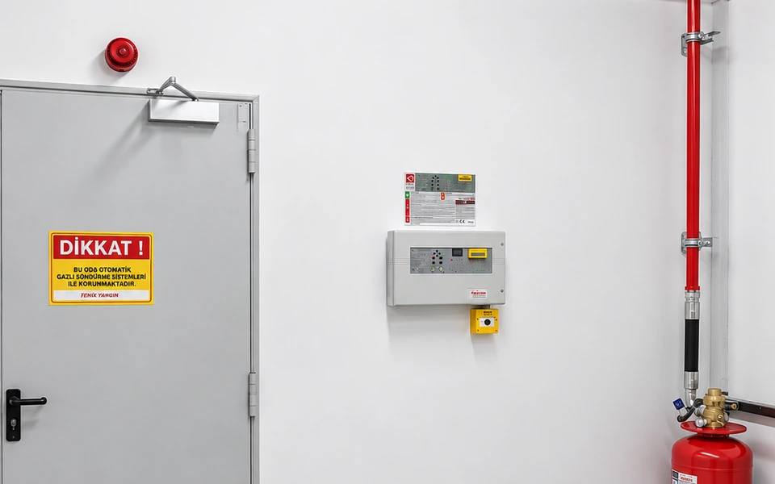

Yangın Söndürme Tesisatı Mekanik ve Elektriksel Montaj
Yüksek basınç dikişsiz çelik borulama, sismik askılama, onaylı dövme bağlantı parçaları ve yangına dayanıklı kablaj ile tavizsiz saha işçiliği.

Şok Deşarj Kuvvetlerine Dayanıklı Borulama
Gazlı yangın söndürme sistemlerinde deşarj esnasında boru hattına saniyeler içinde 25 ila 300 bar arasında yüksek basınç şoku iletilir. Yetersiz askılama veya standart dışı fittings kullanımı boru hattının yerinden oynamasına yol açabilir.
Fenix Yangın, sertifikalı boru kaynakçıları ve mekanik ustalarıyla dikişsiz çelik borulama normlarına (ASTM A106 / DIN 2448) ve sismik titreşim kurallarına harfiyen uyar.
Mekanik ve Elektriksel Montaj Detayları
-
Yüksek Basınç Boru Hattı Montajı ASTM A106 / DIN 2448 dikişsiz çelik boru işçiliği ve hassas diş açma/kaynak.
-
Sismik Yük ve Titreşim Askılaması Ani gaz şokunda boru hattının yerinden oynamasını önleyen rijit sismik askılar.
-
360° Nozul Dağılım Hassasiyeti Gazın mahale eşit yayılmasını sağlayan milimetrik açı ve orifis hizalaması.
-
Yangına Dayanıklı Kablaj FE180 / E30-E90 sınıfı yangına dayanıklı kablolarla güvenli kontrol bağlantısı.
-
Pnömatik Hat ve Pilot Bağlantısı Bakır veya paslanmaz çelik pilot hortumlarla gecikmesiz tetikleme mekanizması.
Nasıl Çalışıyoruz?
5 adımda milimetrik hassasiyet ve yüksek basınç güvenliği.
Lazer Hizalama
3D izometrik projeye göre boru askı noktaları ve tavan geçişleri lazerle işaretlenir.
Taşıyıcı Sabitleme
Taşıyıcı betonarme ve çelik konstrüksiyona onaylı sismik dübeller ve askılar sabitlenir.
Hassas Kesim & Montaj
SCH normunda dikişsiz çelik borular hassas kesilerek montajı tamamlanır.
Ekipman Bağlantısı
Deşarj nozulları ve esnek yüksek basınç deşarj hortumları hatta bağlanır.
Pnömatik Denetim
Azot gazı ile boru hattında sızdırmazlık ve basınç dayanım testi uygulanır.
İlgili Yangın Söndürme Sistemleri
CO₂ Karbondioksit Söndürme
Trafo, jeneratör ve elektrik odaları için derinlemesine oksijen boğma sistemi.
Sistemi İnceleyin → TEMİZ GAZLI SİSTEMFM200 Gazlı Söndürme
Sunucu odaları ve veri merkezleri için hassas elektronik dostu hızlı söndürme çözümü.
Sistemi İnceleyin → ÇEVRE DOSTU AJANNovec 1230 Gazlı Söndürme
Sıfır ODP, 1 GWP değeriyle sürdürülebilir kurumsal yangın koruma teknolojisi.
Sistemi İnceleyin → LOKAL ÇÖZÜMPano İçi Mikro Söndürme
Elektrik panolarında yangını başladığı noktada boru üzerinden doğrudan söndürme.
Sistemi İnceleyin →